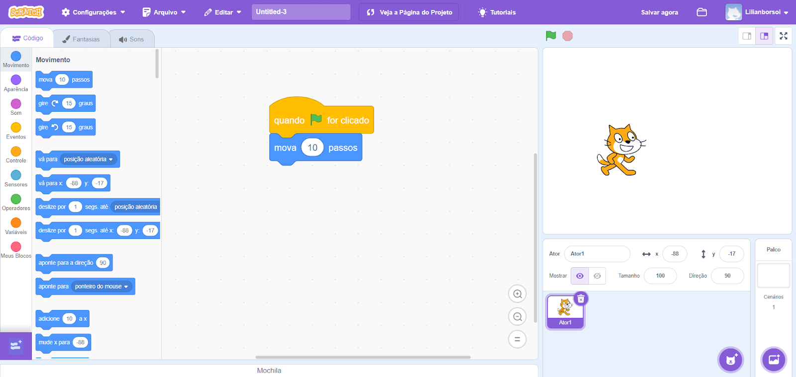

Programação em Bloco
O que é progamação em bloco?
A programação em blocos é uma abordagem inovadora e visual para a criação de programas de computador. Neste método, os usuários constroem seus programas arrastando e soltando blocos visuais pré-definidos, cada um representando um comando ou função específica.
Esta técnica elimina a necessidade de digitar código tradicional, tornando o processo de programação mais acessível e intuitivo, especialmente para iniciantes. Esta forma de programação oferece uma experiência lúdica, permitindo que os estudantes se concentrem na lógica e na estrutura do programa, em vez de se preocuparem com a sintaxe (escrita) complexa das linguagens de programação tradicionais. Ao utilizar blocos coloridos e interativos, a programação em blocos torna mais fácil a visualização do fluxo do programa e a compreensão de conceitos fundamentais de programação.
Como funciona ?
A programação em blocos opera de maneira semelhante a um quebra-cabeça digital. Cada bloco representa um comando ou uma instrução específica, e estes blocos são projetados para se encaixarem de maneiras específicas, garantindo que apenas combinações logicamente válidas sejam possíveis.
Ao montar uma sequência de blocos, o usuário está criando um algoritmo ou um programa. A interface visual permite que os estudantes vejam instantaneamente como os diferentes componentes do programa se relacionam entre si. Isso facilita a compreensão de conceitos como sequência, loops, condicionais e funções de uma maneira mais visível e menos abstrata.
Para criar um programa usando blocos, o usuário seleciona os blocos desejados de uma caixa de opções disponíveis e os arrasta para a área de trabalho. Os blocos são encaixados na ordem desejada para criar a lógica do programa. Como os blocos são pré-definidos e possuem uma sintaxe correta embutida, o estudante pode se concentrar inteiramente na lógica do programa e no fluxo de execução, em vez de se preocupar com erros de digitação.
Como utilizamos
O processo de utilização da programação em blocos geralmente segue uma série de etapas bem definidas:
- Planejamento: começamos definindo o objetivo do nosso programa. Isso pode ser algo simples como fazer um personagem se mover na tela, ou algo mais complexo como criar um jogo interativo.
- Seleção de blocos: com base no objetivo, escolhemos os blocos apropriados que executarão as funções necessárias. Por exemplo, se queremos que um personagem se mova, procuramos blocos relacionados a movimento.
- Montagem do programa: arrastamos os blocos selecionados para a área de trabalho central, que geralmente é uma página em branco onde montamos nossa programação. É aqui que a lógica do programa começa a tomar forma.
- Organização lógica: encaixamos os blocos de maneira lógica e sequencial. A ordem e a estrutura dos blocos são cruciais, pois determinam como o programa será executado. Por exemplo, se queremos que um personagem se mova e depois faça um som, precisamos garantir que os blocos estejam nessa ordem específica.
- Teste e execução: depois montar o programa, podemos executá-lo para ver os resultados. Na maioria das plataformas de programação em blocos, como o Scratch, os resultados são visíveis instantaneamente em uma área de visualização, geralmente localizada no lado direito da tela.
- Refinamento: se o programa não funcionar como esperado, podemos facilmente identificar onde estão os problemas, graças à natureza visual dos blocos. Ajustamos a ordem dos blocos, adicionamos ou removemos comandos conforme necessário.
Onde a programação em blocos é utilizada?
A programação em blocos tem uso em diversos campos, oferecendo uma abordagem acessível e eficaz para o ensino e a prática da programação. Algumas das principais áreas de utilização:
- Aprendizado de programação
A programação em blocos é amplamente utilizada como ferramenta educacional para introduzir conceitos de programação de forma lúdica e intuitiva. Esta abordagem visual e interativa facilita significativamente o processo de aprendizagem, tornando conceitos abstratos mais compreensíveis para iniciantes de todas as idades. Ao eliminar a barreira da sintaxe complexa, os estudantes podem se concentrar na lógica de programação e no pensamento algorítmico, construindo uma base sólida para futuros estudos em ciência da computação.
- Criação de jogos
Uma das aplicações mais empolgantes da programação em blocos é na de jogos simples. Plataformas como o Scratch permitem que usuários, mesmo sem experiência prévia em programação, desenvolvam jogos interativos usando blocos pré-programados. Esta capacidade não apenas torna o processo de criação de jogos mais acessível, mas também serve como uma excelente ferramenta para ensinar princípios de design de jogos, interatividade e lógica de programação de uma maneira envolvente e criativa.
- Robótica educacional
A programação em blocos desempenha um papel fundamental na introdução à robótica educacional. Muitos kits de robótica, como o Lego Education Mindstorms, utilizam interfaces de programação baseadas em blocos. Esta abordagem permite que estudantes programem robôs de maneira intuitiva, controlando movimentos e sensores. Ao combinar elementos físicos (os robôs) com programação visual, os estudantes podem ver imediatamente os resultados de seu código no mundo real, o que proporciona uma experiência de aprendizado prática e estimulante.
Lógica de programação
A lógica de programação é a base fundamental sobre o qual se constrói todo o conhecimento em programação. Ela consiste em um conjunto abrangente de regras, princípios e técnicas que os programadores utilizam para projetar, desenvolver e estruturar programas de computador eficientes e funcionais. Mais do que simplesmente escrever código, a lógica de programação envolve a habilidade de pensar de forma analítica e estruturada, permitindo a facilitação de problemas complexos em uma série de etapas mais simples. Esta habilidade de pensamento lógico e estruturado é essencial não apenas para a programação, mas também se aplica a muitas áreas da vida cotidiana. Para ilustrar este conceito de forma mais simples, podemos usar um exemplo familiar: o processo de fazer um bolo. Assim como na programação, fazer um bolo requer seguir uma série de passos específicos em uma ordem determinada, utilizando ingredientes (que poderíamos comparar a variáveis ou dados em programação) nas quantidades corretas.
Vejamos um exemplo simplificado de como a lógica de programação pode ser aplicada na preparação de um bolo:
- Escolher receita;
- Selecionar Ingredientes
- Selecionar recipiente;
- Adicionar os ingredientes secos;
- Adicionar os ingredientes líquidos;
- Misturar muito bem até ficar homogêneo;
- Despejar a mistura na forma escolhida;
- Levar ao forno;
- Retirar o bolo do forno após 40 minutos;
- Servir o bolo.
Este exemplo de receita ilustra vários conceitos fundamentais da lógica de programação:
- Sequência: os passos são executados em uma ordem específica, assim como as instruções em um programa de computador.
- Condicionais (implícitos): embora não estejam explicitamente declarados neste exemplo simples, poderíamos incluir condicionais como "Se a mistura estiver muito seca, adicione mais líquido".
- Repetição: o passo de misturar até ficar homogêneo implica uma repetição até que uma condição seja atendida.
- Variáveis: os ingredientes e utensílios podem ser vistos como variáveis em um programa.
- Entrada e Saída: a seleção de ingredientes é uma forma de entrada, enquanto o bolo servido é a saída.
É importante notar que esta receita é apenas um exemplo simplificado. Na prática, tanto na culinária quanto na programação, podemos ter processos muito mais complexos, com mais etapas e condicionais. A beleza da lógica de programação está em sua flexibilidade: podemos adaptar, expandir ou simplificar nossos algoritmos conforme necessário para atender a diferentes requisitos ou resolver problemas mais complexos.
Em nossas atividades diárias, frequentemente seguimos sequências lógicas sem perceber conscientemente. No entanto, quando se trata de programação, a definição clara e precisa dessas etapas lógicas assume uma grande importância. Isso ocorre porque, ao contrário de seres humanos que podem inferir informações ou adaptar-se a instruções simples, os computadores requerem instruções extremamente claras e corretas para funcionar corretamente.
Lógica de programação com Scratch
Para compreender melhor como a lógica de programação se aplica em um ambiente de programação em blocos, vamos explorar o Scratch, uma plataforma popular e intuitiva desenvolvida pelo MIT (Massachusetts Instituto de Tecnologia). O Scratch oferece uma analogia visual poderosa para entender conceitos de programação, semelhante à construção com blocos de LEGO.
Imagine que você está construindo um castelo de LEGO. Cada peça de LEGO tem uma função específica e um lugar onde se encaixa perfeitamente. Da mesma forma, no Scratch, cada bloco de código representa uma função ou comando específico. Assim como você seguiria as instruções de um manual para construir um modelo de LEGO, no Scratch você "constrói" seu programa organizando blocos de comando em uma sequência lógica.
O Scratch funciona como um "LEGO digital" para programação, oferecendo uma variedade de blocos coloridos, cada um representando diferentes comandos como movimento, fala, rotação, e muito mais. Estes blocos são projetados para se encaixarem de maneiras específicas, garantindo que apenas combinações logicamente válidas sejam possíveis.
Vamos considerar um exemplo prático para ilustrar como isso funciona:
Suponha que queremos criar um programa simples onde um personagem se move para a direita quando a tecla de seta direita é pressionada. No Scratch, isso seria implementado da seguinte maneira:
- Primeiro, arrastamos um bloco de evento que diz "quando a tecla direita for pressionada". Este bloco serve como o ponto de partida do nosso programa, determinando quando a ação deve ocorrer.
- Em seguida, conectamos um bloco de movimento que diz "mover 10 passos" logo abaixo do bloco de evento.
- Pronto! Agora temos um programa funcional. Cada vez que a tecla de seta direita for pressionada, o personagem se moverá 10 passos para a direita.
Este exemplo simples demonstra vários conceitos fundamentais de programação:
- Evento: O bloco "quando a tecla direita for pressionada" é um manipulador de eventos, respondendo a uma ação específica do usuário.
- Sequência: A ordem dos blocos determina a sequência de execução das ações.
- Ação: O bloco "mover 10 passos" representa uma ação específica que o programa executa.
À medida que você se familiariza com o Scratch, pode criar programas mais complexos, incorporando loops (repetições), condicionais, variáveis, e até mesmo interações entre múltiplos personagens ou objetos. Cada novo conceito é representado por blocos distintos, permitindo que você construa gradualmente sua compreensão da lógica de programação de uma maneira visual e intuitiva.
A beleza do Scratch e da programação em blocos em geral está em sua capacidade de tornar conceitos abstratos de programação em elementos visuais. Isso não apenas facilita o aprendizado inicial, mas também estabelece uma base sólida para a compreensão de linguagens de programação mais avançadas no futuro.
